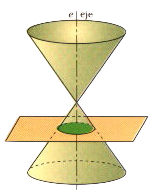
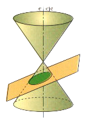
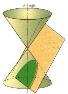
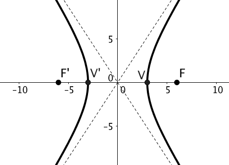
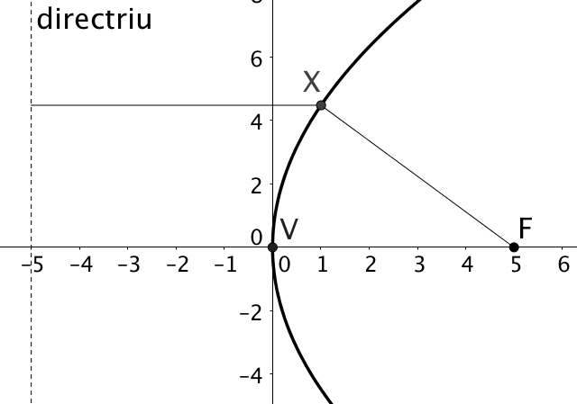
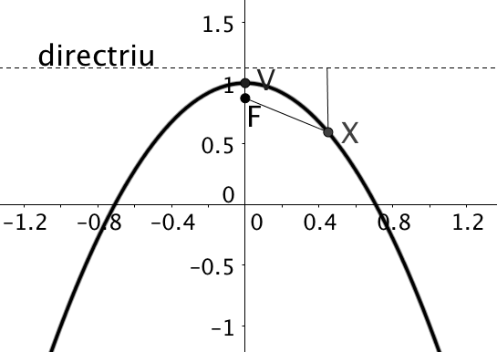
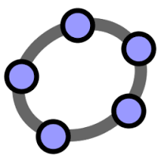

; (-10cm,-2.8cm) – (30cm, -2.8cm);
; (-10cm,-2.8cm) – (30cm, -2.8cm);
|
DEFINICIÓ Es defineix l'el·lipse com el lloc geomètric de tots els punts del pla tals que la suma de les distàncies a dos punts fixos anomenats focus es manté constant. |
at (-65pt,-80pt)
Un lloc geomètric és un conjunt de punts \((x,y)\) del pla que compleixen una certa condició.
Per exemple, el conjunt \(\{ (x,y) \,\, \text{tals que } y=x \}\) és una forma d’expressar tots els punts que es troben sobre la recta \(y=x\).
La bisectriu de costats les rectes \(r_1\), \(r_2\) és el lloc geomètric \[\{X(x,y) \,\, \text{tals que } dist(X,r_1)=dist(X,r_2)\}\]
Una circumferència de centre \(O\) i radi \(R\) són tots els punts de \[\{X(x,y) \,\, \text{tals que } dist(X,O)=R\}\]
Troba el lloc geomètric dels punts que equidisten de \(A(5,-3)\) i \(B(2,0)\).
Calcula el lloc geomètric dels punts \((x,y)\) tals que la diferència dels quadrats de les distàncies als punts \(A(0,0)\) i \(B(6,3)\) sigui igual a 15. Quina figura obtens?
Troba tots els punts del pla que equidisten de les rectes \[r: \, 4x-3y+8=0 \,\,\, \text{i}\,\,\, s:\, 12x+5y-7=0\]
4 Si el pla que talla a la superfície cònica és perpendicular a l’eix, la secció és una circumferència.

Si inclinam el pla de manera que sigui oblic amb l’eix i talli a totes les generatrius, la secció és una el·lipse.

Si continuam inclinant el pla de manera que sigui paral·lel a una generatriu, resulta una paràbola.

Finalment, si inclinam encara més el pla, obtenim una figura amb dues branques que s’anomena hipèrbola.

Vídeo 194: La circumferència
R0.3
És defineix una circumferència com el lloc geomètric de tots els punts del pla que equidisten d’un punt anomenat centre.
L’equació canònica d’una circumferència de radi \(R\) i centre el punt \(O(x_0, y_0)\) és: \[\label{eq:circ-canonica} (x-x_0)^2+(y-y_0)^2=R^2\]
Si efectuam els quadrats en l’equació ([eq:circ-canonica]) obtindrem l’expressió general de la circumferència: \[\label{eq:circ-genreal} x^2+y^2+Ax+By+C=0\] essent \(A=-2x_0\), \(B=-2y_0\), \(C=x_0^2+y_0^2-R^2\). És important notar que només serà possible formar una circumferència si \(x_0^2+y_0^2-C > 0\).
Calcula l’equació canònica i general de la circumferència de centre \(O(3,0)\) i que passa pel punt \(P(5,2)\). En primer lloc calculam el radi
\[R=dist(O, P)=\sqrt{(5-3)^2+(2-0)^2}=\sqrt{8}\]
L’equació canònica és \((x-3)^2+(y-0)^2=8\). Si efectuam els quadrats, trobam l’equació general: \(x^2+y^2-6x+1=0\).
Donada la circumferència d’equació
\(x^2+y^2+4x-10y+13=0\)
troba el seu centre i radi.
De l’equació general identificam els coeficients \(A=4\), \(B=-10\) i \(C=13\). Si utilitzam les relacions: \(4=-2x_0\), \(-10=-2y_0\) automàticament tenim el centre \(x_0=-2\) i \(y_0=5\).
Per trobar el radi utilitzam la darrera relació: \(13=(-2)^2+5^2-R^2\). Si d’aquí aïllam \(R\) trobam \(R=4\).
Aquesta circumferència té d’equació canònica \((x+2)^2+(y-5)^2=4^2\).
Calcula l’equació de la circumferència que passa pel punt \(A=(1, 1)\) i té per centre a \(O=(-1, 3)\).
Comprova que \(x^{2} -2x+y^{2} =0\) és l’equació d’una circumferència. Troba’n el centre i el radi. Dibuixa-la.
Vídeo 195: L’el·lipse
És defineix l’el·lipse com el lloc geomètric de tots els punts del pla tals que la suma de les distàncies a dos punts fixos anomenats focus es manté constant.
L’equació canònica d’una el·lipse de semieixos \(a\) i \(b\) i centre el punt \(O(x_0, y_0)\) és:
R0.3
\[\label{eq:ellipse-canonica} \frac{(x-x_0)^2}{a^2}+\frac{(y-y_0)^2}{b^2}=1\]
Quan els semieixos d’una el·lipse són iguals \(a=b=R\), trobam l’equació ([eq:circ-canonica]) de la circumferència.
Els vèrtexs estan situats en els punts \((x_0-a, y_0)\), \((x_0+a, y_0)\), \((x_0, y_0-b)\), \((x_0, y_0+b)\). Els focus els trobam en els punts \(F(x_0+c, y_0)\) i \(F'(x_0-c,y_0)\).
Definim \(c\) com la semi-distància focal. A qualsevol el·lipse .
Una mesura de quan estirada és una el·lipse ens ho dóna l’excentricitat \(e=\frac{c}{a}\). Per una el·lipse es compleix que \(0<e<1\). Quan \(e \rightarrow 0\) és pràcticament una circumferència i \(e \rightarrow 1\) s’assembla a un “espagueti”.
Calcula l’equació de l’el·lipse sabent que té centre a \(O(0,0)\), té semieix major 8 i que un dels focus és al punt \(F(3,0)\). Calcula la seva excentricitat. Si el centre és \((0,0)\), l’equació canònica es redueix a \(\frac{x^2}{a^2}+\frac{y^2}{b^2}=1\). Una de les dades és que el semieix major val \(a=8\) i que la semi-distància focal és \(c=3\). Falta trobar \(b=\sqrt{a^2-c^2}=\sqrt{55}\). L’equació és: \(\frac{x^2}{64}+\frac{y^2}{55}=1\).
L’excentricitat és \(e=c/a = 3/8 = 0.375 \), òbviament menor que 1.
Donada l’equació de l’el·lipse \(\frac{x^2}{9}+y^2=1\), troba la posició dels seus focus i dels vèrtexs. Troba la seva excentricitat.
En primer lloc veim que el centre és el punt \((0,0)\). El semieix major val \(a=\sqrt{9}=3\) i el semi-eix menor \(b=1\). La semi-distància focal es troba de \(c=\sqrt{a^2-b^2}=\sqrt{8}\).
Els vèrtexs estan a \((-3,0)\); \((3,0)\); \((0,1)\); \((0,-1)\). Els dos focus es troben a \(F'(-\sqrt{8},0)\) i \(F(\sqrt{8},0)\).
L’excentricitat és \(e=c/a = \sqrt{8}/3 = 0.943\) propera a 1, cosa que ens indica que és bastant allargada.
Calcula el centre, semi-eixos, focus i excentricitat de l’el·lipse \(\frac{\left(x+1\right)^{2} }{9} +\frac{\left(y-1\right)^{2} }{4} =1\).
Una el·lipse té focus en \((-2, 0)\) i en \((2, 0)\) i passa pel punt \((3, 0)\). Calcula la seva equació i dibuixa-la. Quant val l’excentricitat?
Calcula l’equació d’una el·lipse centrada a l’origen en vèrtex en el punt \(V(10,0)\) i excentricitat \(e=0.2\).
Vídeo 196: La hipèrbola
És defineix la hipèrbola com el lloc geomètric de tots els punts del pla tals que la diferència de les distàncies a dos punts fixos anomenats focus es manté constant.
L’equació canònica d’una hipèrbola de semieixos \(a\) i \(b\) i centre el punt \((x_0, y_0)\) és:
R0.34
\[\label{eq:hiperbola-canonica} \frac{(x-x_0)^2}{a^2}-\frac{(y-y_0)^2}{b^2}=1\]
Els vèrtexs estan situats en els punts \((x_0-a, y_0)\), \((x_0+a, y_0)\). Els focus els trobam en els punts \(F(x_0+c, y_0)\) i \(F'(x_0-c,y_0)\).
Definim \(c\) com la semi-distància focal. A qualsevol hipèrbola es compleix que . L’excentricitat \(e=\frac{c}{a}\) per una hipèrbola compleix que \(e>1\).
Les dues branques d’una hipèrbola s’acosten a dues asímptotes obliqües que tenen com equacions \(y-y_0=\pm \frac{b}{a} (x-x_0)\).
Si \(a=b\), es diu hipèrbola equilàtera i es compleix que les dues asímptotes formen un angle recte. Si prenem les asímptotes com a eixos, l’equació de la hipèrbola equilàtera es trasforma en \(xy=k\).
Calcula l’equació de la hipèrbola sabent que té centre a \(O(0,0)\), semi-distància focal 6 i excentricitat 2. Calcula les seves asímptotes. Representa-ho tot gràficament.
R0.34

Si el centre és \((0,0)\), l’equació canònica es redueix a \(\frac{x^2}{a^2}-\frac{y^2}{b^2}=1\). Una de les dades és que el semi-distància focal val \(c=6\) i que l’excentricitat és \(e=2\). Sabem que \(e=c/a\), i d’aquí aïllam el semieix major \(a=c/e=6/2=3\). Falta trobar el semi-eix menor \(b=\sqrt{c^2-a^2}=\sqrt{27}\). L’equació és: \(\frac{x^2}{9}-\frac{y^2}{27}=1\).
Les asímptotes són \(y=\pm \frac{\sqrt{27}}{6}x\).
Donada l’equació de la hipèrbola \(x^2-y^2=9\), troba la posició dels seus focus i dels vèrtexs. Calcula la seva excentricitat.
Es tracta d’una hipèrbola equilàtera \(a=b=3\). El centre és el punt \((0,0)\). La semi-distància focal es troba de \(c=\sqrt{a^2+b^2}=\sqrt{18}=3\sqrt{2}\).
Els vèrtexs estan a \((-3,0)\); \((3,0)\). Els dos focus es troben a \(F'(-3\sqrt{2},0)\) i \(F(3\sqrt{2},0)\).
L’excentricitat és \(e=c/a = 3\sqrt{2}/3 = \sqrt{2}\approx 1.41\).
Donada la hipèrbola \(\dfrac{\left(x-1\right)^{2}}{16} -\dfrac{{y}^{2}}{9} =1\), calcula el centre, els seus focus, asímptotes i la seva excentricitat.
Calcula l’equació de la hipèrbola equilàtera que té per focus \(\left(2,\; 2\right)\) i \(\left(-2,\quad 2\right)\), així com els seus paràmetres a i b i la seva excentricitat. Dibuixa-la.
Vídeo 197: La paràbola
R0.3
És defineix la paràbola com el lloc geomètric de tots els punts del pla tals que la distància a un punt fix anomenat focus és igual a la distància a una recta anomenada directriu.
Si anomenam \(p\) la distància entre el Focus i la directriu, i suposam que la directriu és la recta horitzontal \(y=-p/2\) i el focus és al punt \(F(0, p/2)\), trobam la paràbola vertical: \[\label{eq:parabola-v} y=\frac{1}{2p}x^2\] Aquesta paràbola té el vèrtex en \(V(0,0)\). Si desplaçam el vèrtex al punt \(V(x_0,y_0)\), l’equació canviaria a \(y-y_0=\dfrac{1}{2p}(x-x_0)^2\).
Si la directriu és la recta horitzontal \(x=-p/2\) i el focus és al punt \(F(p/2, 0)\), trobam la paràbola horitzontal: \[\label{eq:parabola-h} x = \frac{1}{2p}y^2\] Aquesta paràbola també té el vèrtex en \(V(0,0)\).
Totes les paràboles tenen excentricitat \(e=1\).
Calcula l’equació de la paràbola que té el focus al punt \(F(5,0)\) i com directriu la recta \(x=-5\). Representa-la gràficament.
R0.3

Es tracta d’una paràbola horitzontal amb \(p=10\). El vèrtex és el punt \((0,0)\). L’equació és \(x=\frac{1}{20}y^2\).
Considera la paràbola \(y=-2 x^2 + 1\), troba la posició del seu focus, el vèrtex i l’equació de la directriu. Representa gràficament la situació.
R0.3

Es tracta d’una paràbola vertical. El vèrtex és el punt \(V(0, 1)\). La distància entre el focus i la directriu és \(-2=\frac{1}{2p}\), és a dir, \(p=-1/4\). El signe negatiu significa que la directriu està per damunt el focus, és a dir, la paràbola és convexa. La directriu és la recta horitzontal \(y= 1+1/8=9/8\) i el focus es troba a \(F(0,7/8)\).
La figura següent mostra com canvia la forma de la cònica quan anam augmentant l’exentricitat des de 0 (circumferència), passant per 1 (paràbola) fins a valors majors que 1 (hipèrbola).
Calcula l’equació de la paràbola amb focus \(F(3,0)\) i directriu la recta \(x=-3\).
Calcula el vèrtex, focus i directriu de la paràbola \(4y=(x-3)^2\).
L’òrbita d’un cometa té una excentricitat \(1.75\). De quina cònica es tracta? Quina és la distància més propera al focus?
Calcula tots els elements de les el·lipses següents i dibuixa-les.
\(\dfrac{\left(x-2\right)^{2} }{3^{2} } +\dfrac{\left(y+1\right)^{2} }{4} =1\) \(4x^{2} +9y^{2} -8x=0\)
Considera la hipèrbola \(x^{2} -y^{2} +2y=0\). Calcula:
La seva equació canònica.
El seu centre i focus.
Les seves asímptotes.
Calcula tots els elements de les hipèrboles següents i dibuixa-les.
\(\left(x+1\right)^{2} -\frac{\left(y-2\right)^{2} }{4} =1\) \(4x^{2} -y^{2} -8x+2y=0\)
Una hipèrbola horitzontal té centre en el (1, 2) i excentricitat 2. Sabent que passa pel punt (4, 2), quina és la seva equació? [Pista: el paràmetre a el pots treure simplement del dibuix].
El vèrtex d’una paràbola vertical amb les branques cap amunt és el punt (2, \(-\)1). Sabent que passa pel punt (1, 0) escriu l’equació de la paràbola, dibuixa-la i calcula el seu focus.
Identifica les figures, dibuixa-les i calcula els seus focus.
\(2y^{2} +3x={\rm 0}\) \(\dfrac{\left(x+{\rm 1}\right)^{{\rm 2}} }{{\rm 9}} -\dfrac{\left(y-1\right)^2}{{\rm 4}} ={\rm 1}\)
Dibuixa amb Geogebra o qualsevol programa equivalent les següents còniques. Classifica-les en el·lipses, paràboles o hipèrboles.
\(x^{2} +3xy=3\) \(x^{2} +2xy+y^{2} -3y=0\) \(x^{2} -2xy-y^{2} +4=0\) \(2x^{2} +4xy+y^{2} =1\)
Dibuixa les següents el·lipses i calcula els seus eixos major i menor. Series capaç de calcular la seva excentricitat? [Pista: fes-ho amb l’ordinador, tallant l’el·lipse amb la recta focal].
Una el·lipse amb focus en (1, 3) i en (3, 1), que passa per l’origen.
Una el·lipse amb focus en (\(-\)1, 0) i en (\(-\)5, 2) que passa pel \((-1, 2)\).
Dibuixa, amb Geogebra o un programa equivalent les següents hipèrboles i calcula els seus eixos major i menor.
Una hipèrbola amb focus en (1, 3) i en (3, 1) que passa pel (2, 0).
Una hipèrbola amb focus en \((-1, 0)\) i en \((-5, 2)\) que passa pel \((-1, 2)\).
Dibuixa les següents paràboles i calcula el seu eix de simetria i el seu vèrtex.
Una paràbola amb focus en (1, 3) i recta directriu \(y = x\).
Una paràbola amb focus en (\(-\)1, 1) i recta directriu \(3x+y = 4\).
Calcula els focus i els paràmetres a, b i c de les següents hipèrboles equilàteres i dibuixa-les:
(2) \(xy=\frac{9}{2}\) \(xy=32\) \(xy=24\) \(xy=1\)
Identifica les figures i dibuixa-les
\(\frac{\left(x-1\right)^{2} }{4} -\frac{\left(y+1\right)^{2} }{9} =1\) \(\frac{\left(x-2\right)^{2} }{3^{2} } +\frac{\left(y-1\right)^{2} }{2^{2} } =1\) \(y^{2} -2x=0\)
Calculau la circumferència que passa pels punts A=(1, 4), B=(3, 4) i C=(5, 5).
\(x^2+y^2+Ax+By+C=0\). Plantejam i resolem un sistema \(3\times 3\).
\(\left\{ \begin{array}{l} A+4B+C=-17\\ 3A+4B+C=-25\\ 5A+5B+C=-50 \end{array} \right.\);
Trobam \(A=-4\); \(B=-17\); \(C=55\). L’equació de la circumferència és \(x^2+y^2-4x-17y+55=0\). En forma canònica: \((x-2)^2+(y-\frac{17}{2})^2=\frac{85}{4}\)
Solució alternativa: Calcula el circumcentre del triangle ABC.
Calculau l’equació d’una hipèrbola amb centre \(O(-1, 1)\) i semi-eixos 8 i 5. Dibuixa-la.
Identifica les figures i dibuixa-les. Calcula els focus.
\(\frac{x^{{\rm 2}} }{{\rm 4}} +y^{2} ={\rm 1}\) \(y^{2} -{\rm 2}x={\rm 1}\) \(\frac{(x-3)^2}{9}-\frac{y^2}{4}=1\) \(\frac{(x-1)^2}{4}+\frac{(y+1)^2}{9}=1\)
Identifica les figures i dibuixa-les.
\(x^{2} +2y^{2} -4x=0\) \(x^{2} -y^{2} +2y=0\)
Calcula la circumferència que passa per A=(1, 4), B = (3, 6) i el centre de la qual és el punt mitjà de \(\overline{AB}\).
Considera la hipèrbola equilàtera \(xy=50\). Calcula els seus focus, excentricitat i asímptotes i dibuixa-la.
Una el·lipse té focus en (1, 1) i en (4, 1) i passa pel punt (0, 1). Calcula la seva equació i dibuixa-la. Quant val la seva excentricitat?
Una el·lipse té centre al punt (1, \(-\)1) i passa pels punts (5, \(-\)1) i (1, 1). Sabent que el semi-eix major és 4, a) Dóna la seva equació i dibuixa l’el·lipse, b) Calcula els seus focus i l’excentricitat.
Una hipèrbola equilàtera amb centre a l’origen i passa pel punt (1, 3). Calcula els seus focus i dibuixa-la.
Sabent que les asímptotes d’una hipèrbola són \(y=2x\) i \(y=-2x\) i que passa pel punt (2,0), calcula la seva equació.
Una hipèrbola equilàtera té com a equació \(xy=8\). Calcula els seus focus.
22
Calcula l’equació de la circumferència que passa pels punts \(P(4,5)\), \(Q(-3,4)\) i \(R=(6,1)\). Suposa que l’equació és de la forma \(x^2+y^2+Ax+By+C=0\) i planteja un sistema d’equacions per trobar \(A\), \(B\) i \(C\).
Calcula l’equació de l’el·lipse horitzontal amb centre en \(O(-1,3)\) i semi-eixos 5 i 3. Calcula els seus focus i dibuixa-la. Què val l’excentricitat?
Dibuixa la hipèrbola \(x^2-2y^2=4\) i les seves asímptotes. Calcula els seus focus i l’excentricitat.
Una paràbola vertical té el vèrtex en \(V(1,2)\) i les branques cap amunt. Si sabem que passa pel punt \(P(0,5)\), calcula la seva equació, l’equació de la directriu i la posició del focus.
Identifica les còniques i dibuixa-les:
(3) \(\frac{(x-1)^2}{4}+y^2=1\) \(x^2-2x+y^2-4y+1=0\) \(x^2-3y=6\)